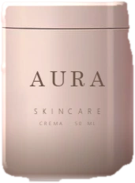
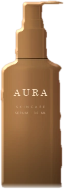

Aura
Skincare
Cosmética · Tienda online
Una tienda que se toca
De una página de producto a un frasco que se coge, se gira y se mira por detrás.
Cógelo y gíralo
01 · El diagnóstico
Cuatro fugas, y ninguna era el diseño
Entraba tráfico de pago cada día. Lo que no encontraba, en el primer golpe de vista, era qué hace, por qué fiarse y cuánto cuesta.
- 01Fuga: se van sin preguntar
El precio estaba a tres pantallas de distancia
Quien no lo encuentra no asume que sea barato: asume que le van a incomodar.
- 02Fuga: no se imagina usándolo
Nueve fotos del producto, ninguna del producto en uso
El envase se veía perfectamente desde nueve ángulos. Lo que no se veía era la textura, el tamaño real en una mano, ni qué se siente al abrirlo.
- 03Fuga: la duda no se resuelve
La prueba social estaba al final, después de comprar
Ciento cuarenta opiniones reales, colocadas donde solo las lee quien ya ha decidido. La duda se resuelve antes del botón, no después.
- 04Fuga: se convence y no compra
El botón de comprar desaparecía al bajar
En una página de mil doscientos píxeles, el momento en que alguien se convence casi nunca coincide con el sitio donde está el botón.
02 · La tienda
Cada pantalla tapa una fuga
No es un vídeo ni una captura: es la tienda, funcionando aquí dentro. Cada pantalla resuelve una de las cuatro fugas.
Toda la carta, con el precio delante
Tapa la fuga 01

Toca un producto para verlo de cerca
Lo que resuelve la duda, antes del botón
Tapa las fugas 02 y 03El carrito no esconde nada
Sin sorpresas al finalUna sola pantalla, y el botón siempre a la vista
Tapa la fuga 04Pedido confirmado
De la carta al pago en cuatro pantallas y sin salir de esta página. Eso es exactamente lo que construimos.
03 · El resultado
Lo que cambia, dicho como lo que es
Es un proyecto de muestra: no hay analítica que enseñar. Lo medible aquí es la pieza, y esos números sí son reales.
Medido el 30 de agosto de 2026 sobre esta misma página, en un móvil de gama media con la red y el procesador limitados. Se repite con puertas.py.
Y el argumento comercial es ese último número. Con fotos, cada variante de producto, cada cambio de etiqueta y cada vista nueva es una sesión de estudio.
Lo que se usó aquí
E-commerce, 3D y conversión
- Diseño web
- UX/UI
- Desarrollo
- E-commerce
- 3D / WebGL
- Motion
- CRO
- Identidad ligera